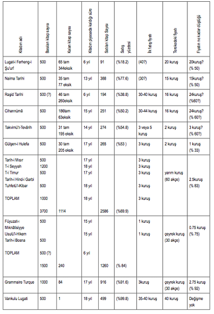

İLK TÜRK MATBAASI
Soru 1: Osmanlı topraklarında ilk matbaa ne zaman açıldı?
Johann Gutenberg’in 1450’li yılların başında matbaayı icadından kısa bir süre sonra baskı makinesi Osmanlı topraklarına geldi. İstanbul’da 1493’te ilk Yahudi matbaası kuruldu. Daha sonra 1567’de Ermeniler, 1627’de de Rumlar ilk matbaalarını açtılar. Ancak ilk Türk matbaası 1727’ye kadar kurulmadı. Bu tarihe kadar matbaa kurmak için yapılmış bir teşebbüse de şimdiye kadar rastlanılmamıştır.
Soru 2: İlk Türk matbaası nasıl faaliyete geçti?
İlk Türk matbaasının kurucularından İbrahim Müteferrika, asıl matbaayı kurmadan önce 1718’de bir harita matbaası kurmak için izin almış ve burada birkaç tane harita basmıştı. 1719 tarihli Marmara Denizi haritası bunlardan birisidir.
İbrahim Müteferrika, bir matbaa kurmak için uğraşıyordu ancak bunu başarabilecek ne maddî ne de manevî gücü vardı. İbrahim Müteferrika’ya matbaa kurması için fırsat onunla aynı düşüncede olan bir başka devlet görevlisinin destek vermesiyle doğdu. Babası Yirmi Sekiz Mehmed Çelebi ile Paris’e giden sadâret mektubi halifelerinden, yani başbakanlık bürokratlarından Mehmed Said Efendi Fransa’da bir matbaayı ziyaret etmiş ve Türkiye’ye döndüğünde bir matbaa açmayı tasarlamıştı. İbrahim Müteferrika ile Mehmed Said Efendi’nin işbirliği yapması sonucu 1727 Temmuz’unun başlarında dönemin padişahı III. Ahmed’in fermanı ve Şeyhülislâm Yenişehirli Abdullah Efendi’nin fetvâsı ile ilk Türk matbaasını kurma izni alındı.
Soru 3: İbrahim Müteferrika, idarecilere matbaanın gerekliliğini nasıl izah etti?
İbrahim Müteferrika, matbaanın önemi, gerekliliği ve faydası üzerine 1726’da kaleme aldığı Vesiletü’t-tıbâa isimli risâlesinde tarih boyunca bazı istilâlar yüzünden yazma eserlerin nasıl yok olduğunu, daha sonraları doğru düzgün yazı yazacak hattatlar kalmadığından yazmaların birçoğunun yanlışlarla dolu bulunduğunu, hâlbuki matbaa sayesinde yazıların daha okunaklı ve hatasız basılacağını, fiyatlarının ucuzlayacağını, bu sayede de büyük kütüphaneler kurulacağını söylemekteydi.
Soru 4: İlk matbaamız nerede faaliyet gösterdi ve hangi kitapları bastı?
İbrahim Müteferrika ve Yirmi Sekiz Çelebizâde Mehmed Said Efendi tarafından Müteferrika’nın Yavuz Sultan Selim semtindeki evinde kurulan matbaanın ilk kitabı, basımı 1729 yılının ilk aylarında tamamlanan ve Vankulu Lugati adıyla bilinen Sıhahül-Cevherfnin tercümesidir.
1729’da ayrıca Katip Çelebi’nin Tuhfetü’l-Kibâr fî Esfâri’l-Bihâr’ı ile Tarih-i Seyyâh der Beyân-ı Zuhur-ı Ağvâniyân ve İnhidam-ı Devlet-i Safeviyan; 1730’da Tarih-i Hind-i Garbi, Tarih-i Timur-i Gürkan, Tarih-i Mısri’l-Cedid ve Tarih-i Mısri’l-Kadim, Gülşen-i Hülefâ ile Grammaire Tur-que; 1732’de İbrahim Müteferrika’nın Usulü’l-Hikem f Nizâmi’l-Ümem’i ile Fuyuzât-ı Mıknatısiyye; 1733’te Kâtip Çelebi’nin Takvimü’t-TevariKi; 1734’te ilk vekayünivis Mustafa Naima’nın Tarih-i Naima’sı; 1741’de Vekayinüvis Mehmed Raşid’in Tarih-i Raşid’i ve Vekayinüvis Küçük Çelebizâde İsmail Âsım’ın Tarih’i; 1742’de Ahvâl-i Gazavât-ı Diyâr-ı Bosna ve Ferheng-i Şu’uri basıldı.
Her ne kadar matbaanın bulunduğu yer ve donanımının bir kısmı şahsi malsa da, matbaanın asıl masraflarını devlet çekti ve burada çalışan işçilerin günlük yiyeceğine kadar ihtiyaçlarını karşıladı. Basılan kitapların fiyatları da devlet tarafından tespit edildi. Matbaanın kurulmasında ve daha sonraki yıllarda çalışmasında en büyük zorluk, kalifiye eleman eksikliğiydi.
İbrahim Müteferrika, matbaayı evine kurmuştu. Orhan Salih’in Mütefferrika’nın terekesini tespiti ilk Türk matbaasının yerini net olarak ortaya çıkardı. Terekeye göre oturduğu yer Fatih’te Sultan Selim Camii yakınlarındaki Mismarcı Şücaeddin Mahallesi idi. Bugün ibadete açık olan Mismarcı Şücaeddin Mescidi, Mismarcı Sokağı’ndadır. Müteferrika satılmayan kitaplarını da Sultan Selim Camii bitişiğindeki Tophane tabir olunan yerdeki kârgir, yani taş odada depolamıştı.
Soru 5: Matbaa hangi şartlar altında ne kadar kitap bastı?
Matbaanın tesisinde önemli bir rolü bulunan Yirmi Sekiz Çelebizâde Mehmed Said Efendi’nin bir süre sonra matbaacılıktan ayrılması ile birlikte iş tamamen İbrahim Müteferrika’ya kaldı. Müteferrika ölümüne kadar matbaada 17 kitap bastı. Matbaanın ilk iki kitabı 1000 adet, üçüncüsü 1200 adet basıldı ancak sonrakiler de bu sayı 500’e indi. Baskı sayısının azalmasında kitapların satılmamasının rolü vardı.
Orhan Salih, Müteferrika’nın bastığı kitapların tirajının 12.000 ile 13.200 arasında tahmin edildiğini, ancak bu sayının abartıldığını söylemektedir. Kendi tahmini olarak da 10.000-11.000 rakamını veriyor. Ayrıca genelde Vankulu Lugatfnden 1000 adet basıldığının ifade edildiğini, ancak Müteferrika’nın kendi yazdığı istidada bu lugatten 500 adet basılacağının belirtildiğini söylüyor. Naima Tarihi’nin sonunda verilen listede 1000 adet diye kaydedilmesinin bu karışıklığa yol açtığını, fakat burada iki cilt beraber dikkate alındığını söylüyor. Aynı listede Naima Tarihi’nin her iki cildinden 500’er adet basıldığı yazılmış, ama toplam yekûnda bu son baskı 1000 adet diye hesaplandığına dikkat çekerek kitap değil de cilt olarak baskı sayısı göz önünde bulundurulduğunu ifade ediyor.
İbrahim Müteferrika bir taraftan matbaayla ilgilenirken, diğer taraftan da devlet tarafından verilen birçok görevle uğraşıyordu. Uzun süre Osmanlı İmparatorluğu’na sığınan II. Rakoczi’nin tercümanlığını ve mihmandarlığını yaptı. İbrahim Müteferrika’nın diğer görevleri matbaayla daha fazla ilgilenmesini engelledi.
1735 yılına kadar 13 kitap basan Müteferrika, Osmanlı-Avusturya-Rus savaşında üstlendiği görevler ve Lehistan elçiliği sebebiyle beş yıl kitap basamadı. 1740-1742 yıllarında dört kitap daha bastıysa da ömrünün son beş yılında yine devlet işleri sebebiyle matbaa yeni eserler vermedi. Bu yıllarda İbrahim Müteferrika Dağıstan’a gidip, döndü ve Yalova’daki Kâğıt Fabrikası ile ilgilendi. Ayrıca bir yıl Divân-ı Hümâyûn tarihçiliği denilen görevde bulundu. Bütün bu meşguliyetleri ve yaşlılığı matbaanın faaliyetlerini engelledi.
Soru 6: İbrahim Müteferrika nasıl bir yayın politikası izledi?
İbrahim Müteferrika bastığı kitapların büyük bir kısmına ilaveler ve açıklamalar yaptı, bir kısmını da notlar ve haritalar ekleyerek zenginleştirdi. Bilhassa Kâtip Çelebi’nin Cihânnümâ’sına yaptığı ilaveler onun Rönesans sonrası Avrupa’daki gelişmeleri nasıl takip ettiğini açıkça gösterir. Batı’da gelişen yeni astronomi ve kâinat sistemleri hakkındaki bilgileri yayınladığı Cihânnümâ’ya ilave etmişti. Bu yüzden Müteferrika’nın yayınladığı Cihânnümâ bir asır boyunca, Türkçe literatürde bu konudaki en önemli metin oldu.
Müteferrika bastığı kitaplarda doğru metni yayınlamak için çok uğraşırdı. Nitekim Tarih-i Hind-i Garbi’yi inceleyen Thomas Goodrich, bu eserin mevcut yazma metinlerinin hiç birisinin tam ve doğru olmadığını, tama ve doğruya en yakın olanın 1730’da Müteferrika’nın yayınladığı olduğunu ve onun bu sonuca birden fazla metin kullanarak vardığını söyler. İbrahim Müteferrika’nın bastığı kitaplar, tarih, coğrafya, dil gibi konularla, askerlik sahasındadır. Araştırmacılar onun bastığı eserlerin seçiminde oldukça isabetli davrandığı görüşündedirler.
Soru 7: Müteferrika bastığı kitaplarda yazma kitap geleneğine nasıl uydu?
Matbaa çalışmaları başında serlevha kullanmayan Müteferrika, 1731’de yayınladığı kendi eseri Usulül-Hikemf Nizâmül-Ümem’den itibaren artık matbu serlevha kullanmaya başladı. Bu durum o dönemde çok güçlü olan el yazma geleneğine uymak zorunda kaldığına işarettir. Orhan Salih, Müteferrika’nın bugüne kadar muhafaza edilen ilk baskılarında serlevhasız satılmaya sunulduğu için satın alındıktan sonra hemen müzehhibe ser levha sipariş edildiğini veya son baskılarındaki matbu serlevhaların sonradan renklendirildiğini belirtiyor.
Soru 8: Müteferrika’nın bastığı kitapları kimler aldı?
Orhan Salih, aynı dönemde İstanbul’da yaşayan askeri, yani yönetici sınıfa mensup olanların tereke kayıtlarını inceleyerek basılan kitapları kimlerin aldığını ortaya çıkardı. Kitap alanlar arasında Müteferrika matbaasında tashihler yapan eski Galata kadısı Esad Efendi (öl. 1732)’nin terekesinde “basma bir Vankulu” vardı. Matbaada çalışmış olmasına rağmen bu dönemde basılan diğer kitapların terekesinde yer almaması da ilginç bir durumdur.
Sadrazam Hacı Ahmed Paşa (öl. 1742)’nın muhallefat defterinde Naima ile Çelebizade tarihleri ve Vankulu Lugati, Şeyhülislâm Hayatizâde Mehmed Emin Efendi (öl. 1748)’nin terekesinde Raşid Tarihi, Cihannüma ve Naima Tarihi yer almaktaydı.
Matbu kitap alan kişilerin sosyal ve mesleki durumunu tespit için bu araştırmayı yapan Orhan Salih, basma kitap satın alanlar arasında genelde kethüda, mektupçu, çavuşbaşı, başhalife, emin gibi Osmanlı saray ve merkez bürokrasisinde çalışanlar ve imam, hatip, müderris, şeyhülislâm, müftü, kadı gibi ulema mensuplarının olduğunu ortaya çıkardı. Özellikle ulemanın kitap alması matbaaya karşı olmadıklarını açıkça ortaya koyuyor. İncelenen terekelerde el yazmalarının sayısının basma eserlere nispeten daha fazla olduğu görülüyor. Fakat bu durum matbaanın başlangıcında çok normal bir durumdur.
Soru 9: İlk Türk matbaası ne zaman kapandı?
Müteferrika’nın 1747’de ölümünden sonra matbaanın işletme izni Rumeli kadılarından İbrahim Efendi ile Anadolu kadılarından Ahmed Efendi’ye müştereken verildi. Bu ikili matbaada sadece bir kitap basabildiler. Talebin olmaması ve halkın ilgisizliği sebebiyle işi bıraktılar. 1757’de basılan kitap da İbrahim Müteferrika tarafından basılan Vankulu Lugati’nin ikinci baskısıydı. Matbaa uzun bir sessizlik dönemi geçirdikten sonra tekrar 1784’te açılabildi.
Soru 10: Matbaa niçin geç geldi?
Türkiye’ye matbaanın geç gelişi bitip tükenmek bilmeyen bir tartışma konusudur. Ancak Osmanlı tarihinde üzerinde düşünülmeden tartışılan konuların en başta geleni de bu meseledir. Kimi günah diye matbaanın gelişine engel olundu derken, kimi de hattatların boykotundan gelmedi der. Ancak gerçek çok basittir; matbaa okumadığımız için gelmedi.
Matbaanın geç gelmesi meselesi tartışılırken İstanbul’da bulunan 90 bin hattatın buna engel olduğu anlatılır. Bu bilgi üzerinde araştırma bile yapılmadan bir an düşünülse, böyle bir şeyin mümkün olamayacağı rahatlıkla anlaşılır. Bırakın 90 bin hattatı, İstanbul’da bu kadar esnaf yoktu. Ayrıca bu kadar hattatımız olsa, kütüphanelerde milyonlarca cilt yazma eserimizin olması gerekir.
Matbaanın geç gelmesiyle ilgili bir diğer yorum da Osmanlılar’ın matbaayı günah diye geç kabul ettiğidir. Hâlbuki böyle bir sebeple matbaanın geç geldiğine dair elde hiçbir delil yoktur. Bu tamamen ideolojik bir yorumdur.
Matbaanın gelmemesi tartışılırken, “Geldi de ne oldu?” sorusu meseleyi rahatlıkla çözüme kavuşturur. Türkiye’ye matbaanın geç girişi hep tartışıldı, fakat matbaanın gelişinden sonra, ne olduğu üzerinde fazlaca durulmadı. Matbaanın kurulmasından İbrahim Müteferrika’nın ölümüne kadar geçen yaklaşık 20 yıllık dönemde Müteferrika’nın gayretleriyle 17 kitap basılabildi. Müteferrika’nın ölümünden sonra ise yalnızca bir kitap basıldı ve ondan sonra matbaa 27 yıl faaliyetine ara verdi. Bu durum matbaanın kurulmasının yanısıra faaliyetinin de tamamen İbrahim Müteferrika’nın gayretleri ile yürüdüğünü, ancak buna karşılık toplumda kitap basımına fazla bir rağbetin olmadığını açıkça gösterir.
XVIII. yüzyılda Osmanlı İmparatorluğu’nda basılan kitap çeşidi 50’yi bulmazken, aynı asırda Japonya’da 10 bin çeşit kitap basılmıştı. Üstelik bu yüzyılda Avrupa’da basılan kitap çeşidi de Japonya’dan çok daha fazladır. Bırakın XVIII. yüzyılı, matbaanın yeni icat edildiği XV. yüzyılın ikinci yarısında Avrupa’da basılan kitap sayısı 30-35 bindi.
İbrahim Müteferrika ilk iki kitabı 1000, üçüncüsünü 1200 adet basmıştı. Daha sonra bastığı kitaplarda ise, birisi hariç baskı sayısını 500’e düşürdü. Bunun sebebi bastığı kitapların satılmamasıydı. Nitekim günümüzde de bazı popüler kitaplar dışında baskı sayısı 1000’dir. Matbaanın gelişi üzerinden yaklaşık üç asır geçmiş olmasına ve nüfusumuzun kat be kat artmasına rağmen Türk toplumu kitap okuma alışkanlığını hâlâ kazanamadı. Zaten kitapla aramız iyi olsaydı, bugün kütüphanelerimizde matbaadan önceki dönemde yazılmış her eserin, yüzlerce, binlerce nüshası bulunurdu.
Türkiye’ye matbaanın gelişi ele alınırken toplumsal talebin ve altyapının ne ölçüde olduğunun iyice incelenmesi ve bunun gecikmeye ne kadar tesir ettiğinin belirlenmesi, bu konuyu daha iyi açıklar. Yoksa matbaanın açılmasına, üzerinde düşünülmeden hiçbir zaman olmamış 90 bin hattatın veya din anlayışının engel olduğunun iddia edilmesi bu konuyu izah etmediği gibi, boş tartışmalara sebep olur. Matbaa Türkiye’ye okumayı ve kitabı sevmediğimizden geç geldi.
Soru 11: İbrahim Müteferrika kimdir?
İbrahim Müteferrika, 1670’li yılların başında Erdel’in Koloszvar şehrinde dünyaya geldi. Müslüman olmadan önceki hayatı hakkında çok az bilgi vardır.
Müteferrika, Müslüman olmadan önce teslis akidesine karşı çıkan ve tek Tanrı inancını benimseyen Unitarius mezhebine mensuptu.
Hayatı ile ilgili ilk somut bilgilere göre İbrahim, Nisan 1716’dan önce kapıkulu süvarilerinin en mümtaz ve itibarlı kısmı olan sipahların kırk birinci bölüğünde görev yapıyordu. Sipah bölüğünde iken Avusturya seferinde yaptığı hizmetlerden dolayı İbrahim, 18 Nisan 1716’da dergâhı âli müteferrikalığına, yani padişahın özel hizmetindeki saray görevlilerinin arasına tayin edildi. Ardından Osmanlı İmparatorluğu’na sığınan Macarlar’ın yanında tercüman olarak görevlendirildi. 1717’de Osmanlı ülkesine davet edilen asi Macarlar’ın lideri II. Ferenc Râkoczy’nin yanına tercüman ve mihmandar olarak tayin edildi. 1735’te Râkoczy’nin ölümüne kadar onun hizmetinde bulundu, bu arada matbaacılık faaliyetleriyle devletin verdiği diğer vazifeleri de yaptı. Râkoczy’nin ölümünden sonra Türkiye’de kalan diğer Macar soylularının hizmetinde bulundu. 1736 Aralık’ının sonunda antlaşmanın yenilenmesi için Leh Baş Hatmanı’na mektup götürdü.
1736-1739 yılları arasındaki Osmanlı-Avusturya-Rus savaşında aktif olarak görev yapan Müteferrika, savaş sırasında Osmanlı saflarına katılan Macar askerlerinin yazımını üstlendi ve Orşova Kalesi’nin Osmanlı İmparatorluğu’na teslimi için yapılan görüşmeleri yönetti. Savaş sürerken 2 Şubat 1738’de top arabacıları kâtipliğine getirildi ve böylece Divân-ı Hümâyûn’da hâcegân zümresine, yani bürokratlığa yükseldi. 25 Ekim 1743’te top arabacıları kâtipliğinden ayrıldı ve Kafkaslar’da Kaytak Hanlığı’na getirilen Ahmed Han’ın tayin beratını Dağıstan’a götürdü.
İbrahim Müteferrika bu yolculuktan döndükten sonra 14 Kasım 1744’te merkez bürokratlıklarından birisi olan Divân-ı Hümâyûn tarihçiliğine tayin edildi. Bu görevi 7 Kasım 1745’e kadar sürdü. Bu sırada Yalova’da kâğıt fabrikası kurmaya teşebbüs etti ve Lehistan’dan ustalar getirtti.
1747 başlarında vefat eden İbrahim Müteferrika, Aynalıkavak Kabristanı’na defnedildi. 1942’de ise mezarı Reşid Saffet Atabinen’in teşebbüsüyle buradan Galata Mevlevihânesi Haziresi’ne nakledildi.
İbrahim Müteferrika sadece bir matbaacı değil aynı zamanda XVIII. yüzyılın en önemli Osmanlı aydınlarındandır. Birçok kitap kaleme aldığı gibi, tercümeler de yaptı. 1710’da yazdığı Risâle-i İslâmiyye, eserlerinin en çok ilgi çekenlerinden biridir. Müteferrika bu eserinde Müslüman olmasının sebeplerini, İslâmiyet’in son hak din olduğunu ve önceki kutsal kitapların onu nasıl müjdelediğini anlatır ve yer yer Hristiyanlığı ve Kitâb-ı Mukaddes’i eleştirir.
İbrahim Müteferrika’nın 1731’de I. Mahmud’a sunduğu ve Müteferrika Matbaası’nın dokuzuncu kitabı olarak 1732’de yayınlanan Usulül-Hikem fi Nizâmü’l-Ümem, yani Milletlerin Düzeninde Tutulacak İlmî Usuller isimli eseri siyasetnâme türünde bir çalışmadır ve daha çok devlet düzeni ve askerlik sanatıyla ilgilidir. Müteferrika, Sultan I. Mahmud’a bir nevi ıslahat projesi gibi sunduğu eserinde Avrupa’daki devlet yönetimi şekillerini “monarkiya”, “aristokrasiya” ve “demokrasiya” başlıklarıyla üç gruba ayırır. Eserde ayrıca fizik, astronomi ve coğrafya ilimlerinin devlet yönetimindeki önemi üzerinde durarak, bu ilimlerin gelişmediği bir ülkede sağlam bir devlet düzeninin kurulamayacağını söyler. Bunun yanında ilk defa “nizâm-ı cedid”, yani “yeni düzen” tabirini kullanarak, Osmanlı İmparatorluğu’nun da XVIII. yüzyıl Avrupa’sında gelişen yeni askerlik düzenlerini mutlaka alıp uygulaması gerektiğini ifade eder.
İbrahim Müteferrika’nın Füyûzâtı Mıknatısiyye ve Mecmûatü Hey’etil-Kadime vel-Cedide isimli iki tercümesi de vardır.
İbrahim Müteferrika, gerekli gördüğü kitaplara ilâve ettiği haritalar ile kendi çizdiği ve bastığı haritalarla Osmanlı haritacılığında yeni bir dönemin açılmasını da sağladı.
Soru 12: İbrahim Müteferrika ne zaman öldü?
İbrahim Müteferrika’nın mezartaşında ölüm tarihi 1160 (1746-1747) olarak yazılmışsa da, bütün araştırmacılar tarafından kitâbedeki Şair Nevres’in onun Basmacı lakabından kinâye olarak “Basdı İbrahim Efendi sahn-ı firdevse kadem” mısrasında düşürdüğü tarih olan 1158 (1745) ölüm yılı kabul edilmiş, hiç olmayacak bir yorumla 1160’ın mezarının yapım yılı olduğu ileri sürülmüştür. Mezartaşına ölüm yılının değil de mezarın yapıldığı tarihin yazılmasının bir manası yoktur. Tarih düşürülen mısrada bir yanlışlık vardır.
İbrahim Müteferrika’nın ölümü ile ilgili 1746 tarihini verenler de vardır. Hammer Avusturya elçisi Penklerm raporuna istinaden Haziran 1746, daha muahhar bir kaynak olan d’Ohsson da 1746 yılını İbrahim Müteferrika’nın ölüm tarihi olarak vermektedir.
Bizim tespit ettiğimiz arşiv kayıtlarında İbrahim Müteferrika’nın ölüm tarihi açıkça 6 Şubat 1747 (25 Muharrem 1160) olarak görülmektedir. Bu tarih mezartaşında yazılı olan 1160 yılının onun ölüm tarihi olduğunu açıkça ortaya çıkarmaktadır.
Ayrıca yine aynı tarihten itibaren mevâcibi ikiye bölünerek iki kişiye verilmiştir. Ölüm tarihi net olarak verilmesine rağmen bu tarihin tam doğru olmamasını da bir ihtimal olarak değerlendiriyoruz. Mevâcib işlemini yapan kâtip, Müteferrika’nın ölüm tarihini doğru olarak yazmış olabileceği gibi, mevâcib tevcihini yaptıktan sonra aynı tarihi vefat günü olarak da kaydetmiş olabilir. Bunu net olarak çözmek mümkün değildir. Ancak bu sistemin işleyişinden hareket edersek, tarihin çok farklı olmayacağını anlayabiliriz.
Terakki veya ibtidâdan mevâcib almak isteyen kişiler, mahlûl mevâcib çıkmasını dört gözle beklerlerdi. Mevâcib defterleri incelendiği zaman ölen birisinin mahlûlünü haber vererek kendileri tasarruf etmek için müracaat edildiği görülür. Ayrıca devlet mevâcib tasarruf eden birisinin öldüğünü haber verenlere “ihbar parası” verirdi. Bu yüzden de maaş tasarruf eden birisi öldüğünde hemen Küçük Ruznâmçe Kalemi’ne müracaat edilirdi.
İbrahim Müteferrika’nın mevâcibini alan kişilere baktığımızda bunların da müteferrika olduğunu görüyoruz. Ayrıca Hacı Ahmed veled-i Hacı Hasan, Mehmed veled-i Mehmed isimli müteferrikaların “emekdâr” olarak zikredilmesi bunların Müteferrika cemaatin eskilerinden olduğunu gösterir. Bu yüzden de bu iki kişi İbrahim Müteferrika’nın ölümünden haberdar olup, mevâcib almak için derhal müracaat etmiş olmalıdırlar.
Zaten Müteferrika’nın ölümü üzerine matbaanın devredilmesi ile ilgili verilen ferman 1-11 Şubat 1747 (Evahir-i Muharrem 1160) tarihlidir. Müteferrika’nın ölüm tarihi ile ilgili tespit ettiğimiz 6 Şubat tarihi ile çakışmaktadır. Bu bir tesadüf değildir. Nitekim Orhan Salih’in tespit ettiği İbrahim Müteferrika’nın ölümü ile ilgili sicil kayıtlarında 21 Şubat tarihli bir hüccetin olması da Şubat ayının önemini belirtmektedir.
Bütün bunlardan hareket ettiğimizde İbrahim Müteferrika’nın ölüm tarihinin açıkça Şubat 1747 olduğunu söyleyebiliriz.
Soru 13: İbrahim Müteferrika’nın özel kütüphanesinde hangi kitaplar vardı?
Orhan Salih tarafından tespit edilen terekede İbrahim Müteferrika’nın özel kütüphanesindeki kitaplar tek tek kaydedilmiştir. Kütüphanede Arap harfli 100 kitap bulunmaktadır. Ancak Müteferrika gibi bir aydının kütüphanesinin daha zengin olması gerekirdi. Kitaplarının içerisindeki en ilginçleri Roma’daki Typog-raphia Medicea’da XVI. yüzyılın sonları ile XVII. yüzyılın başlarında basılmış Arap harfli matbu Öklides Şerhi ve Nüzhetül-Müştaktır. Bu kitaplar Müteferrika’nın matbaa işine girişmeden önce geniş bir araştırma yaptığını gösteriyor.
Müteferrika’nın özel kütüphanesindeki kitapların içerisinde Kâtip Çelebi’nin Mizanü’l-Hakk’ı, Gelibolulu Mustafa Âli’nin Nusretnâmesi, Kınalızâde Ali’nin Ahlak-ı Alâîsi, Nişancı Ramazanzâde Mehmed’in Tarih-i Mirât-ı Kâinâfı, Ebul-fida’nın Takvim-i Buldariı ili Acaibül-Mahlukat bulunmaktadır. Bastığı kitaplardan Tarih-i Çelebizâde, Tarih Timur, Vankulu Lugati vardır. Bu kitaplar içerisinde en ilginci Kâtip Çelebi’nin bugün Viyana’da bulunan müellif nüshası Rumeli Cihannümâsı’dır. Müteferrika Cihannümâ’dan sonra bu kitabı da basmayı planlamıştı. Ancak ömrü vefa etmedi. Rumeli Cihannümâsı 12.240 akçe ile en pahalı kitaptır ve Arap harfli kitaplarının dörtte biri değerindedir. En pahalı ikinci kitap 4.010 akçe ile Tarih-i Mirât-ı Kâinât’tır. Müteferrika’nın Arap harfli kitaplarını toplam değeri 49.938 akçedir.
Terekede Müteferrika’nın kütüphanesindeki Latin harfli kitaplarda kaydedilmiştir. Toplam 30 civarındaki bu kitapları içerisinde Meninski Lugati, Atlas Minor, İncil ve Tevrat dikkat çekmektedir. Astronomi ile ilgili birçok kitap ve ayrıca 40’a yakın harita vardır. Bunlar Müteferrika’nın Kâtip Çelebi’nin Cihannüması’na yaptığı şerhlerde ve diğer bastığı ve yazdığı eserlerde kullandığı kitaplar olmalıdır.
Soru 14: Matbaanın gizli kurucusu kimdir?
İlk Türk matbaasının kurulmasında ve işletilmesinde İbrahim Müteferrika’nın rolü büyüktür. Ancak Yirmisekiz Çelebizâde Mehmed Said Efendi’nin bu işteki payı da gözden kaçırılmamalıdır.
Yirmisekiz Çelebi Mehmed Efendi’nin oğlu olan Mehmed Said Efendi İstanbul’da doğdu. Sadaret mektubi kaleminde memuriyet hayatına başladı ve burada halifeliğe, yani büro şefliğine kadar yükseldi. Babasının Paris elçiliği sırasında onun kethüdâsı olarak beraber Fransa’ya gitti. Fransa’dayken bu ülkeyi inceledi ve Fransızca öğrendi.
Said Efendi, babası Yirmisekiz Mehmed Çelebi’nin elçiliği sırasında Fransa’da matbaayı yakından görüp, inceledi ve Osmanlı İmparatorluğu’na geri döndüğünde babasının devlet nezdindeki nüfuzunu da kullanarak, ilk Türk matbaasının kurulmasını sağladı. Yirmisekiz Mehmed Çelebi’nin elçiliği sırasında Paris’te yanlarında bulunan Saint Simon hatıratında Mehmed Said Efendi’nin Paris’te bir matbaayı ziyaret ettiğini ve İstanbul’a dönüşünde bir matbaa açmayı düşündüğünü yazmaktadır. Bu bilgi matbaaanın tesisinde onun rolünü açıkça ortaya koyar. Ayrıca matbaanın kurulması için izin alınmasında Mehmed Said Efendi’nin ve babasının devlet nezdindeki itibarları önemli rol oynamıştı. Mehmed Said Efendi’nin matbaayı kurduktan sonra memuriyet hayatında yükselmesi sebebiyle matbaacılıktan erken ayrılması ve İbrahim Müteferrika’nın bu sahada fedakârane çalışmaları sebebiyle ilk Türk matbaasının kurulmasındaki rolü unutuldu.
Matbaacılıktan ayrıldıktan sonra Osmanlı bürokrasisinde üst düzey birçok görevde bulunan ve Fransa ile İsveç’te elçilik yapan Yirmisekiz Çelebizâde Mehmed Said Efendi, 25 Ekim 1755’te sadrazamlığa tayin edildi, ancak beş ay sonra 1 Nisan 1756’de azledilerek İstanköy’e sürüldü. Daha sonra Hanya, Adana, Mısır, Konya valilikleri yaptı ve Maraş valisiyken 1761 Kasım’ının sonlarında öldü.
Soru 15: Müteferrika’nın bastığı kitapların ne kadarı satıldı?
İbrahim Müteferrika’nın bastığı kitaplardan ne kadarının satıldığı şimdiye kadar bilinmiyordu. Orhan Salih’in tespit ettiği Müteferrika’nın terekesi basılan kitapların ne kadarının satılıp, ne kadarının satılmadığını ortaya çıkardı.
Terekedeki kitapların fiyatları düşük görünmektedir. Bunun böyle olmasının birkaç sebebi vardır: Birincisi kitaplar ciltli ve tam satışa hazır hâlde değildir. İkincisi de Müteferrika öldüğü için kitapların bir an önce nakde çevirilmesi gereklidir. Bu yüzden de düşük rayiç biçilmiş olmalıdır.
Kitapların satış performansına bakılırsa İbrahim Müteferrika’nın matbaanın ilk ürünlerini satmada oldukça başarılı olduğu söylenebilir. Nitekim asrın sonlarına gelindiğinde Müteferrika baskısı kitaplar piyasada bulunmuyordu. Toplumumuzun kitaba bakışı dikkate alındığında Müteferrika’nın devrin şartlarına rağmen iyi bir satıcı olduğu ortaya çıkıyor.
Ayrıca Müteferrika’nın kitaplarını sadece Türkler’e değil Avrupalılar’a da sattığına dikkat etmek gerekir. Bu iş için hazırlanan Latince kataloglarla Avrupa’nın değişik yerlerinde bastığı kitapları pazarladı. Müteferrika, ayrıca toptan satışlar da yaptı. Meselâ, Grammaire Turçue’den 200 adetini Cizvit Mektebi’ne satmıştı. Fiyatı 3 kuruş olan kitabı toptan olduğunda 2.5 kuruştan vermişti. Yine zaman zaman kitapların fiyatında indirimler yaptı. Basıldıktan birkaç yıl sonra (1733-1735) Vankulu Lugati’nin fiyatını 35 kuruştan 25 kuruşa, Tarih-i Seyyah’ı da 2, 2.5 kuruşa indirmişti.
Matbaanın kuruluş amaçlarından biri olan ucuz kitap politikasını da gerçekleştirmişti. Nitekim Müteferrika, 350 kuruşa satılan Vankulu Lugati’ni 25 kuruşa satacağını söylemiş, bu eseri 35-40 kuruşa satmıştı. Nitekim Müteferrika’nın terekesinde bulunan yazma Vankulu Lugati’nin fiyatı da basma gibi 40 kuruştu.
Müteferrika’nın mirasının toplam değeri 3.172.756 akçe (26.439,5 kuruş 16 akçedir). Müteferrika’nın mirasının yaklaşık altıda beşi bastığı ancak satılmayan kitaplardır. Terekede zikredilen ve yazarın satış durumlarını yorumladığı kitapların durumunu daha iyi anlaşılacak bir biçimde bir tablo hâlinde veriyoruz:
MÜTEFERRİKA MATBAASININ BASTIĞI KİTAPLARIN SATIŞ RAKAMLARI
